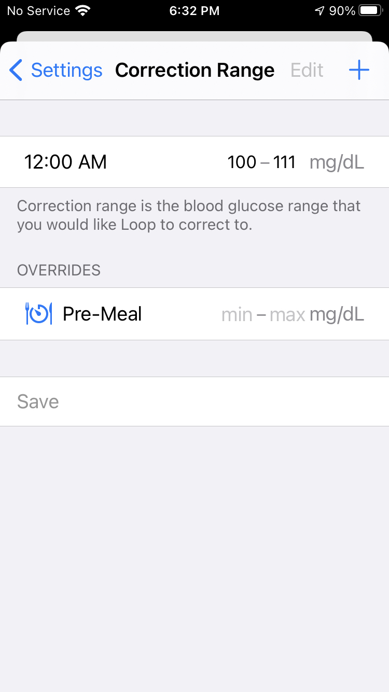

Loop 2 Configuration
Configuration¶
This page will cover two general parts of the Loop app settings for Loop 2.2.x versions. The sections documented are circled in red in the screenshot below. The headings will match the flow of the screen, top to bottom.
-
The first circled section covers closed/open loop status and how to issue a Loop Report.
-
The second circled section is the configuration section. This section contains a lot of really important settings that control how your Loop will calculate your predicted glucose curve. Given the importance of your predicted glucose curve to Loop's actions, please make sure you read over this page carefully to know how to navigate the selections and entries.

Closed/Open Loop¶
The user can select closed loop or open loop using this slider. When you first start Loop, we encourage you to leave this slider disabled and become familiar with the app using Open Loop mode.
As soon as Closed Loop is enabled, Loop will begin automatic adjustment of insulin dosing. Please ensure the settings you entered are appropriate for the Loop algorithm.
Open Loop Mode¶

When the Closed Loop switch is in the (Off) position, Loop WILL NOT modify insulin dosing automatically.
Closed Loop Mode¶

When the Closed Loop switch is in the (On) position, Loop WILL automatically modify insulin dosing on the configured insulin pump. This is known as closed loop. Typically, Loop will show the recommended temp basal or automatic bolus just above the blood glucose graph prior to automatically enacting it. It may take a few seconds for Loop to connect to the pump to enact the modified dose.
Issue Report¶
If you run into problems or errors with your Loop, a Loop Report, generated by tapping on the Issue Report row can be used to help identify where the problem is occurring. The Loop Report can be sent to yourself via text or email. You can then post it on Zulipchat to ask for help.
Frequently, if you seek help with a technical problem, a Loop Report will provide insight for the developers and troubleshooters. Please email yourself a Loop Report anytime you are questioning Loop actions or displays. Acquiring a screen shot of the phone is also useful. You can use the report and graphics later to ask for help or discard them if you figure it out on your own.
Select Glucose Units¶
Before you continue further, a word about glucose units
Entries into the configuration section will be available in mg/dL or mmol/L automatically, based upon how your blood glucose values are received. By default they are set to mg/dL, however once CGM values arrive in mmol/L these Loop settings can be entered in mmol/L. If you are planning to use mmol/L, be sure to wait to set your entries until after you have started to receive CGM values in Loop. If you do these in the wrong order, then your charts and entries may have incorrect units.
Correction Range¶
The correction range is your blood glucose range that you would like Loop to correct to. Correction range is not necessarily the same target blood glucose range that you have discussed with your endocrinologist; generally the doctor's range may be much wider. For example, you may keep a correction target of 100-110 for Loop to aim to, but use a desired glucose target range of 80-180 when discussing things with your endo about "time in range".

Click the + in the upper right corner to add correction glucose range(s). You can have multiple ranges based on time of day, but the first setting of the day needs to begin at midnight.
Correction ranges can be a single number, such as 100-100 mg/dL, or a range such as 100-120 mg/dL. Generally speaking, if you choose to use a range, keeping the range between about 10-30 mg/dL between the lowest and highest value is a good starting place.
Pre-Meal Range¶
Below the Correction Range entry is a section called "Overrides" with a Pre-Meal setting. While active, the pre-meal targets will replace the usual correction range for Loop's temp basal recommendations. If a pre-meal range is not entered in this section, the icon will remain grey and unusable on the main screen's toolbar.
The pre-meal override target can be used as an easy way to get a small amount of insulin delivered before a meal in order to help control post-meal blood glucose spikes.
If your normal target is 100-110 mg/dL and pre-meal target is 80-80 mg/dL, for example, Loop will give you an extra push to get you to the lower target number before the meal. This early insulin brings you into the meal with a mini-prebolus. The pre-meal target, when activated by pressing on the icon, will stay active for one hour, until carbs are entered, or until it is manually cancelled...whichever comes first.
Loop will adjust any insulin bolus as needed based on the extra insulin provided during this pre-meal time.
Suspend Threshold¶
The suspend threshold must be set up for successful configuration of Loop. Your Loop will not turn green without setting this value. This value affects both bolus and basal recommendations by Loop.
Bolus¶
- If you are trying to bolus a meal while any part of the predicted glucose curve is below this suspend threshold value, Loop will not recommend a bolus. Instead, you will need to wait until your prediction curve is above the suspend threshold value in order to bolus.
Basal¶
- If your current or any point on your predicted glucose curve is below the suspend threshold, Loop will always recommend a temporary basal rate of 0 U/hr.
Reasonable settings for suspend threshold will depend on user preference, but recommended not set lower than 65 mg/dL.
Basal Rates¶
Note: You cannot enter basal rates until you first add a pump in Loop settings. Your basal rates will be initially populated when you walk through the Add Pump part of the setup at the beginning of this setup guide.
Only one basal schedule may be set in each Loop app. The basal increments are available according to the increments of the particular pump/pod you are using. Not all pumps provide the same increments for basal deliveries. Basal schedule must start at midnight and cannot contain rates of 0 U/hr.
To edit a line in your basal schedule, tap the line and adjust the time and/or amount. To remove a line, select Edit in the top right and delete it. If tapping the line doesn't work, try closing and re-opening the app. When finished editing, click on the Save to Pump... or Sync With Pod button, depending on which pump you are using.
If you make any basal edits and use the Cancel button to go back to the menu without successfully saving/syncing to pump/pod, the changes you made will not be saved. Loop makes saving/syncing to pump a mandatory step to successfully editing basal rates. If you get an error message while trying to save/sync the edited basal rates, please retry until successful.
Delivery Limits¶
The maximum basal rate and maximum bolus settings are collectively referred to as Delivery Limits. This section will have been initially populated when you finished the Add Pump part of the setup previously. For safety, similar to basal schedule, you must keep these values the same on both the Loop app and within the pump/pod settings. If you edit these settings in Loop app, always use the Save to Pump... or Sync With Pod button, depending on which pump you are using.
Maximum Basal Rate¶
Maximum basal rate will cap the maximum temporary basal rate that the Loop is allowed to enact to meet your correction range. Typically, Loop users set their maximum basal rate around 3-4 times their highest scheduled basal rate. When you are first beginning to use Loop, it is wise to start conservative (low) in setting your maximum basal rate. If your settings are incorrect in other areas (basal rates, insulin sensitivity, carb ratio, etc), you may need time to identify where settings need to be adjusted. This process is easier if Loop is given less latitude to set high basal rates. Gradually increase your maximum basal rate as your comfort and confidence in Loop increases. If you need help with your settings adjustment, head over to LoopTips for some initial settings help
Maximum Bolus¶
Enter your desired single bolus maximum here. For safety, don't set a maximum bolus limit any higher than your typical large meal bolus.
Insulin Model¶
There are four insulin models to choose from with Loop 2.x; Walsh, Rapid-Acting Adults, Rapid-Acting Children, and Fiasp. If you want to read the nitty-gritty discussion that went into the development of the Rapid-Acting and Fiasp curves (collectively called "exponential insulin models"), you can see that in GitHub here.
Loop 3 Insulin Type
Loop 3 drops the Walsh model and, by default, does not include the concept of child versus adult for "rapid" acting insulin, i.e., Humalog, Novalog and Apidra.
- Insulin Type is selected when the user adds a pump
- The user can choose to customize Loop 3 to Enable Child Model
We highly recommend selecting one of the exponential insulin models for Loop 2.2.x (in other words, not the Walsh model).
A common new Loop user error is to select Walsh model in order to easily shorten their insulin duration (DIA) to one like they used prior to Looping. This almost invariably leads to insulin stacking. If you would like to read more about why the duration of insulin action is important in Loop vs how you've traditionally used it, please click here to read a blog post about the subject. In summary, choosing Walsh curve just to shorten your DIA will lead to insulin stacking and less than desired bolusing recommendations.
You can click on each model and see what each model's insulin activity curve looks like, active one selected in blue.

The differences between the three exponential models (two Rapid-Acting and Fiasp) models has to do with the timing of the peak insulin activity timing. Not surprising, since Fiasp is marketed as the "faster acting" insulin. Currently all the exponential models are defaulted to an insulin duration of 6 hours, but the peak activity of the curves differs:
- Rapid-acting adult curve peaks at 75 minutes
- Rapid-acting child curve peaks at 65 minutes
- Fiasp peaks curve peaks at 55 minutes
Dosing Strategy¶
This configuration setting gives you the ability to select the Dosing Strategy. (If you do not see this setting, then you are running Loop v2.2.4 or older.) If you tap on that Dosing Strategy, it reveals a selection screen, shown in the graphic below, with some explanation. Note that this Dosing Strategy feature was available for more than a year in the automatic-bolus branch. Users who have been using the automatic-bolus feature should update as soon as possible to get the other improvements recently added, Loop Releases.

The Automatic Bolus selection causes Loop to provide 40% of the recommended dose as a bolus at the beginning of each Loop cycle (when a CGM reading comes in). This is a faster method of getting the recommended insulin delivered. When Loop delivers extra insulin, the scheduled basal rate continues unchanged.
Both Temp Basal Only and Automatic Bolus strategies restrict basal rates to reduce the amount of insulin delivered when appropriate.
Temp Basal Only¶
- When your glucose is at or above target, Loop determines the amount of Recommended Bolus based upon your settings. Subject to your Delivery Limits, Loop will deliver the Recommended Bolus over 30 minutes using positive temp basals (i.e., increase over your scheduled basal rate) to increase your IOB. This decision is re-evaluated during every Loop interval.
- When your glucose is below target, negative temp basals (i.e., reduction of your scheduled basal rate) are used to reduce your IOB. This decision is also re-evaluated during every Loop interval.
You can manually bolus at any time by pressing the Bolus icon in the center of Loop’s Main Screen.
Automatic Bolus¶
When you are first starting Loop, we encourage you to leave automatic boluses disabled until you are sure your settings are dialed in. To enable automatic boluses, click on Settings – Dosing Strategy – Automatic Bolus. This Automatic Bolus checkbox turns-off positive temporary basal so that:
- When your glucose is at or above target, you receive 40% of the Recommended Bolus at every Loop interval.
- When your glucose is below target, negative temp basals (i.e., reduction of your scheduled basal rate) are used to reduce your IOB. This decision is re-evaluated during every Loop interval (same as with the Temp Basal Only dosing strategy).
As with all Loop versions, you can manually bolus at any time by pressing the Bolus icon in the center of Loop's Main Screen. Any bolus recommendation that you see when you press the Bolus icon will be 100% of the Recommended Bolus.
Carb Ratios¶
Click the + in the upper right to add carb ratios for various times of day. Loop works best if you have tested and optimized your carb ratio settings for accuracy.
Beware of other apps writing carbs to Health app
If you are using a third-party app (such as Spike or MyFitness) that can write carbohydrates to the phone's Health app, you will need to double-check permissions to make sure Loop doesn't read those carb entries. Confirm Loop permissions in Health to only write and not read carbs. See see Loop Permissions.
Insulin Sensitivities¶
Insulin Sensitivity Factor (ISF) is the same term as Correction Factor used in some clinics and endocrinology offices. ISF represents the drop in blood glucose levels expected from one unit of insulin. Click the + in the upper right to add insulin sensitivities for various times of day. Loop works best if you have tested and optimized your ISF settings for accuracy. Insulin sensitivities can change for many reasons including waiting too long to change your infusion set. Loop will not auto-detect changes in ISF.
Incorrectly set ISF is the most common cause of roller coaster glucose for new Loop users. You will need to raise (increase) your ISF value/number to help smooth a roller coaster glucose trend. You can read about that topic more over in LoopTips here.
Loop 2 Services (Optional)¶
You are not required to use services, although many Loopers use Nightscout. If you do not yet have Nightscout configured and want to add it later, just return to this page when you are ready. This can be added at any time. The same is true for the other services. For more details, click on Loop 2 Services.

Next Step: Loop 2 Displays¶
Proceed to the Loop 2 Displays page. Understanding the Loop displays can be a valuable tool to understanding your Loop's actions, and also for troubleshooting, if you are having issues.